|
|
|
A system is therefore an object composed from a systemic set of objects, which deploy interdependence relations between their attributes. We may state that two attributes x and y are interdependent if a variation 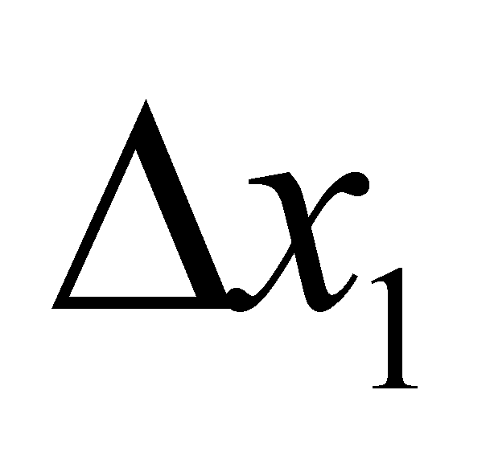 determines a variation 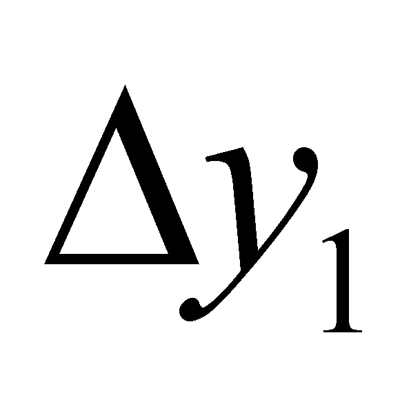 by means of a relation f, and a variation 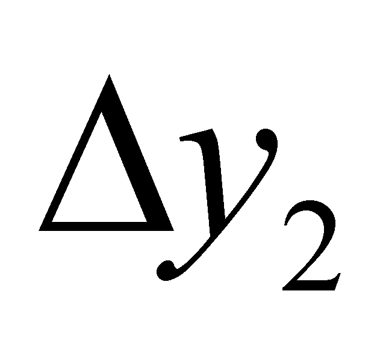 determines a variation 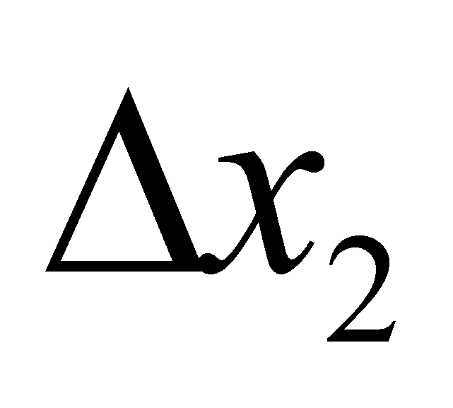by means of a relation g, namely:
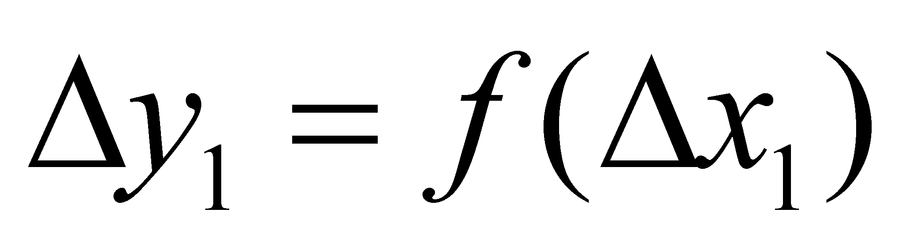 (9.4.4.1)
and:
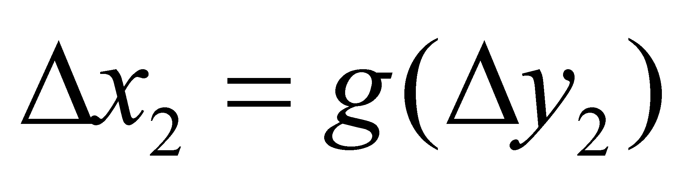 (9.4.4.2)
The purely abstract interdependence implies a non-determination concerning the separation between the cause and effect, the two variables acting simultaneously both as causes and effects of the variations. The answer to this dilemma is possible to be given by introducing a third variable, independent to the first two variables, but on which both of them are dependent. As for the real processes, the role of such a variable is assigned to the time, a variable (by definition) which is totally independent from any other attribute. The time plays the role of an universal support provided to the real processes, which means that no real process is able to exist without being distributed on this attribute, distribution which cannot reach infinite density values (namely, velocity or acceleration). The existence of a defined causality means that the effect (of a process) occurs always after the cause (variation of the cause variable). In the above-written relations, is a cause variation for the effect (by means of relation f) and is a cause variation for the effect (by means of relation g). In other words, it may be written that:
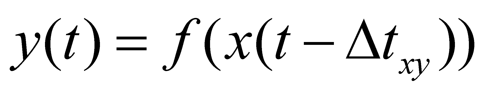 (9.4.4.3)
and:
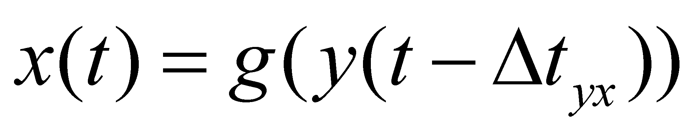 (9.4.4.4)
where 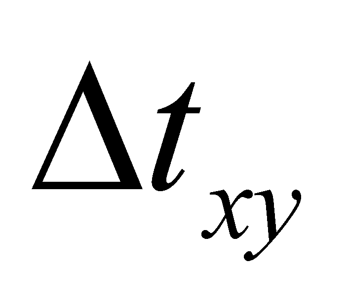 is the temporal interval required for the realization of the variation process of the amount y as a result of the variation of x (the value of y at the moment t is the effect of the value assigned to x at the previous moment t-). If we replace t with t-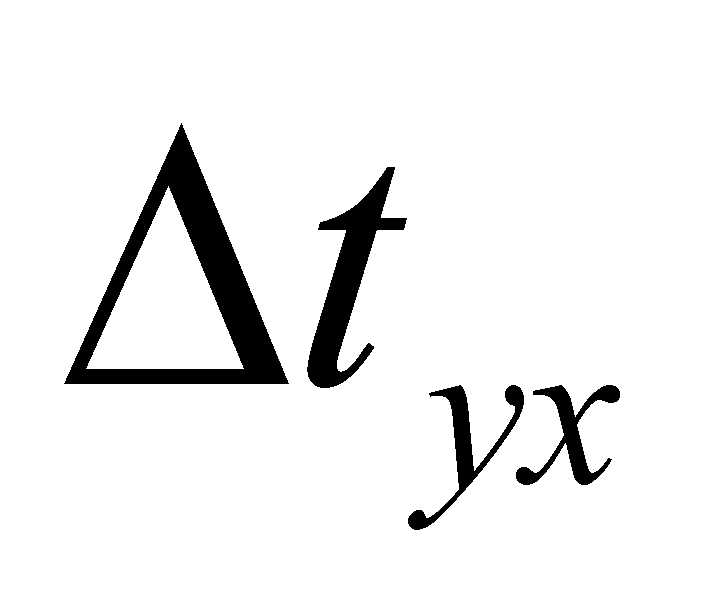we shall have:
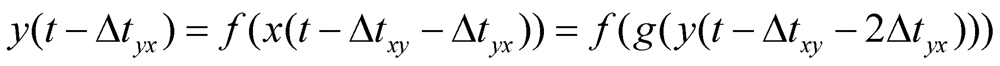 (9.4.4.5)
which clearly shows that in case of the interdependence relations, the value of an attribute belonging to one of the objects depends not only on the value of the attribute of the related object, but even on the individual value of this attribute from a previous moment (the influence of individual past actions on the present state). The interrelation of the object’s attributes which make-up a system is due even to the common internal reference, against which any of the attributes directly depends on. The invariance of the assignment relations against this common reference for each constitutive object makes that any attribute variation of one of its components to determine a variation of all the other components in order to keep the invariance of the whole object (and once with it, of the internal reference position). The interdependent attribute (or their set) within a system represents the system’s formation criterion.
Copyright © 2006-2011 Aurel Rusu. All rights reserved.